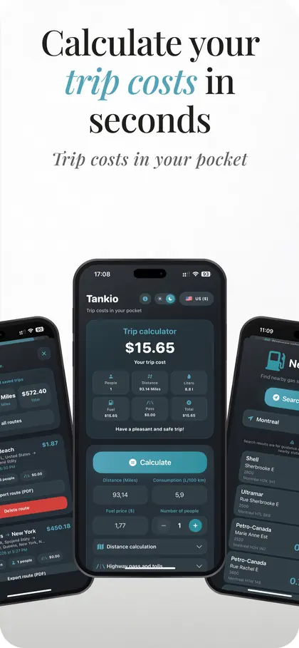
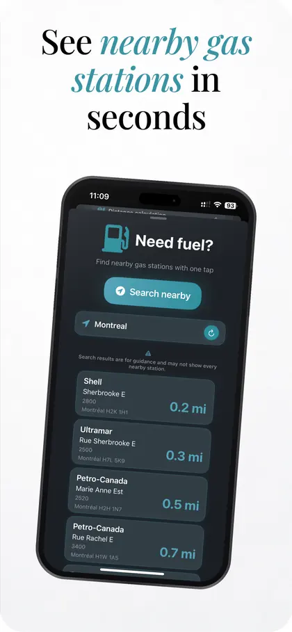
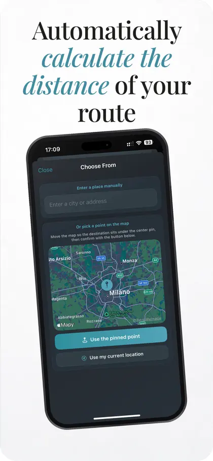
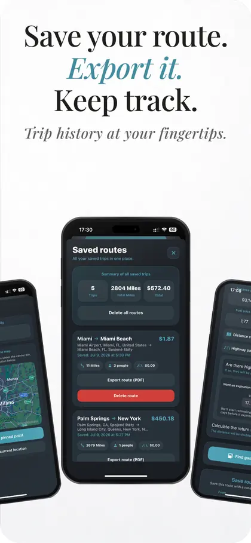

IT podpora
Riešenie problémov, správa zariadení a pokojnejší pracovný deň pre používateľov aj tímy.
helpdeskzariadenianastaveniepoužívateľská podpora
Udržiavam techniku, zariadenia a digitálne prostredia v chode.
Spájam IT podporu, troubleshooting, opravy elektroniky, webdizajn a iOS vývoj s praktickým pohľadom na to, čo ľudia naozaj potrebujú.
Ako viem pomôcť
Riešenie problémov, správa zariadení a pokojnejší pracovný deň pre používateľov aj tímy.
Diagnostika, opravy telefónov, tabletov a PC s jasným postupom a férovým výsledkom.
Čisté stránky, ktoré dávajú zmysel na prvý pohľad a fungujú na každej obrazovke.
Od nápadu po funkčný prototyp. Malé aplikácie s veľkým dôrazom na detail.
Cesta doteraz
Bratislava, Slovakia · Hybrid
Samostatná IT podpora používateľov, správa zariadení a lokálneho IT prostredia.
Bratislava, Slovakia · On-site
Technická podpora tímov, pracovísk a zariadení v rýchlej prevádzke.
Západné a stredné Slovensko · On-site
Diagnostika pred zákazníkom, opravy telefónov a PC, výstupná kontrola servisu.
Nitra, Slovakia · On-site
Autorizovaný servis Huawei: diagnostika, servisné postupy a kontrola kvality.




Vlastný projekt
Vytvoril som iOS aplikáciu na výpočet nákladov na cestu — palivo, diaľničné poplatky, uložené jazdy, blízke čerpacie stanice a PDF exporty.
Máš otázku?
Napíš mi, čo potrebuješ vyriešiť. Odpoviem normálne, bez formulárového bludiska.
contactme@nagymart.in ↗︎ LinkedIn ↗︎